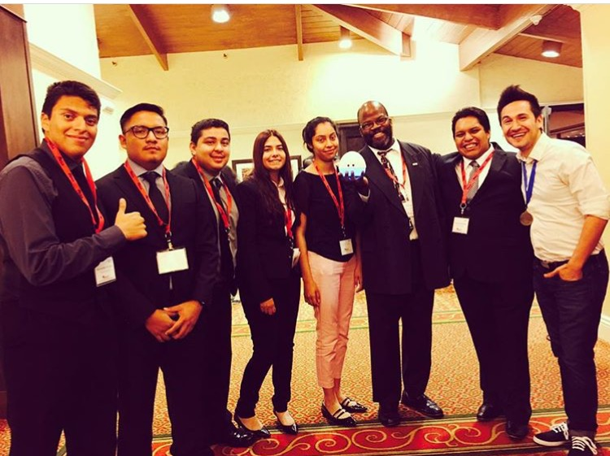
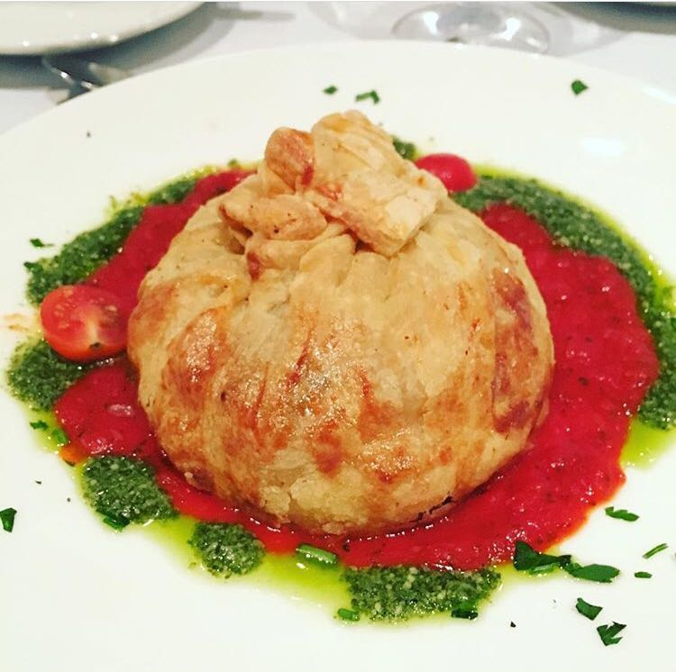

Interest
MESA Conference

On October 2nd, 2015 I was one out of the six students who got personally got invited to attend the MESA Conference in Santa Clara, California. It was an amazing experience to be able to have an opportunity to attend the conference with my friends and our M.E.P Director T. Fox to represent Cal State LA. It's a once of a life time experience as a student to be able to the conference, so in the future as a professional I will be attending that specific conference. I have a couple of pictures of the amazing food that was served! Besides the food, each student/professional had a different team number on their badge for students/profesionals can sit in the same table as the team number to network. I had the chance to get a mock interview, everyone only had one interviewer. I was the only student who had two interviewers at the same time, besides that through networking in my first quarter I met a gentlemen name Bill James who is a professional that comes to Cal State LA and gives workshops to students in ECST. He introduced me to Dr. Justin James who works at SPAWAR gave me another mock interview on the spot. During one of the Dinners Alonso Martinez from PIXAR gave a speech and showed all of us his robot Mira. The picture on the left to right: Alexander Leon, Francisco Moxo, Chris Merlos, Myself, Emily Silva, MEP Dirctor T. Fox holding Mira, Francisco Mireles and Alonso Martinez from PIXAR.
HEENAC Conference

Couple weeks later, after the MESA Conference, I attended the HEENAC Conference with my board (Society of Hispanic Engineering and Science Students), and friends. I didn't have any pictures of myself at the conference but here's a picture of my lunch. I was the only one in my table of friends with this dish (They were serving chicken and I wasn't feeling it, so I asked for their Vegetarian dish). Now, let me say this dish is the exact same dish I had at the MESA Conference! What are the odds?! I really enjoyed the workshops with Lockheed Martin, Sandia National Labatories,Boeing, SpaceX etc. I'm interested in going into CyberSecurity! I also had to balance out my school work, so when my friends weren't looking I sneaked out of the workshop and went to my hotel room and started coding (It's better to be ahead and on top of homework). Regarding to my hotel room I didn't mention that we had a suite, I was sharing the room with my friend. It was really cool! I didn't go last year and gave my free registration to a random freshman from ecst so they could experience attending a conference(I believe registration is $175 including lodging of course).
SHESS Google Tour
In Spring Quarter 2016, I was the Society of Hispanic Engineering and Science Student Lead for the Google Tour in the Google Office, Venice Beach, California. We had approximately 20 students including myself who had the chance to attend. I met Hector who was the one in charge of giving us a tour around Google. I can't explain how casual Google is when it comes to clothes. Wouldn't it be cool to come to work with jeans, a random shirt, and a pull over sweater, get paid to code and free food? They even have their on salon, just imagine you're at work and you're just like "Hey I should cut my hair" or "I should get a trim", no worries Google has a hairstylist. When you're on your break/off work you can take a surf board and walk to the beach, or you can grab a bike and ride for a bit. If you feel like being challenged no worries, just head outside and play a game of a life size CHESS with your co-worker. Besides all of that I love how Google is Team Base and how they have a huge white board at their confernece room.
SHPE National Conference
November 2nd, 2016 I attend the Society of Professional Engineers Conference National Conference. Since I was the only student who was going to compete in the Hackathon, I didn't have a team. The difficult part of the Hackathon was finding a team because they wouldn't want a girl in their team or they assumed I couldn't code. I was sitting in a huge table and I asked these three guys if I could join their group. Two guys looked at the third guy, that's how I knew that he was the lead of the group. The lead of the group looked up and asked me if i could code, and what languages I know. The group of three guys got excited when they heard I could code, mostly excited when I said java, and javafx. This other group that was on the same table were surprised that I could code. I believe it's because the girl in their group wasn't a Computer Science Major, she was a math major. My teammates were all from texas and they were really awesome!The Hackathon was from Wednesday, November 2nd,2016 to Friday, November 4th, 2016. In the first day alot of students droped from the hackathon, it was very strange.